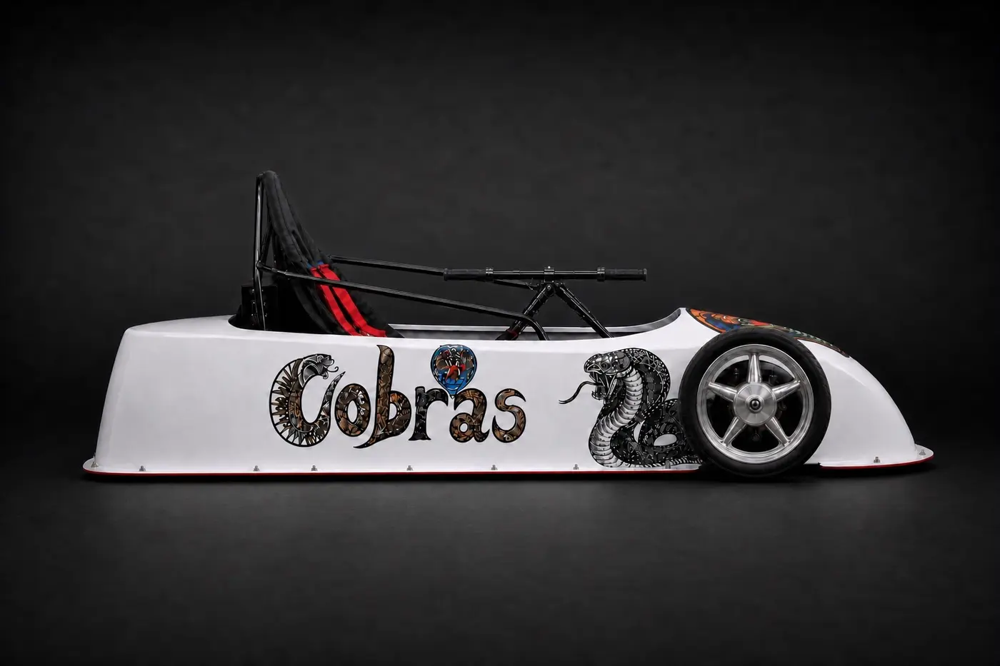
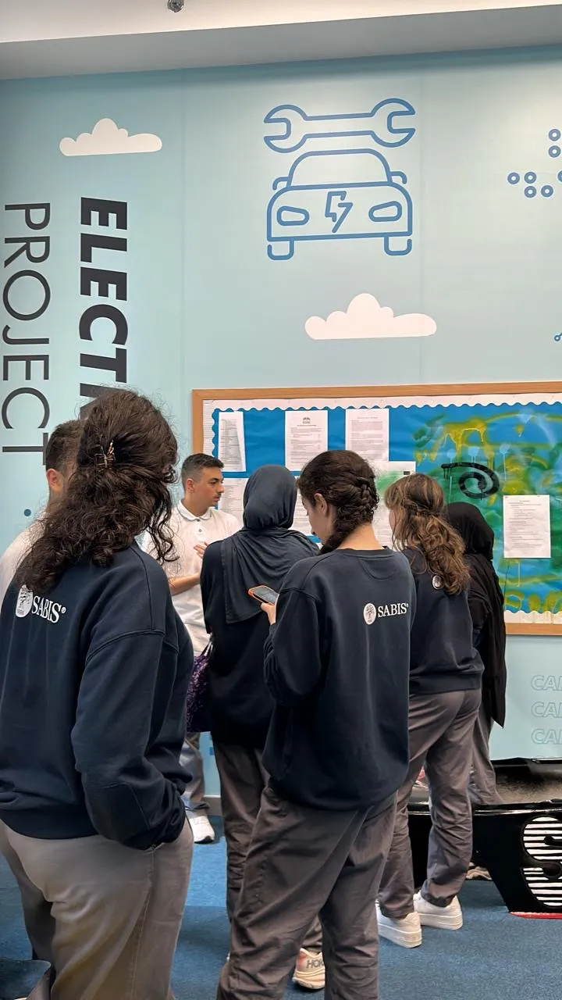
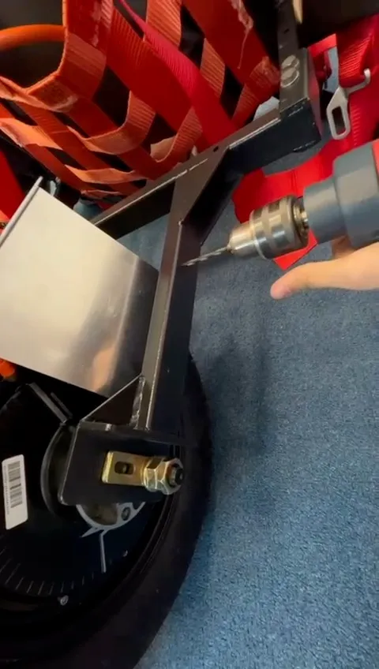
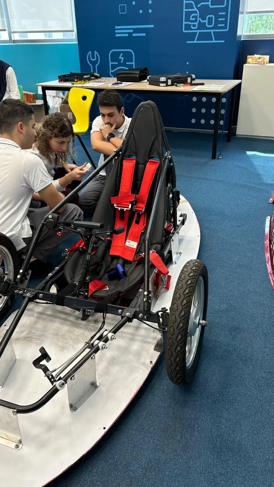
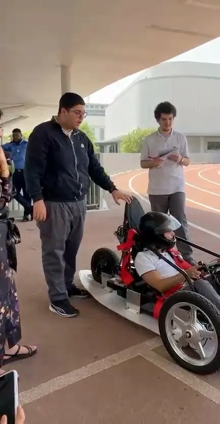
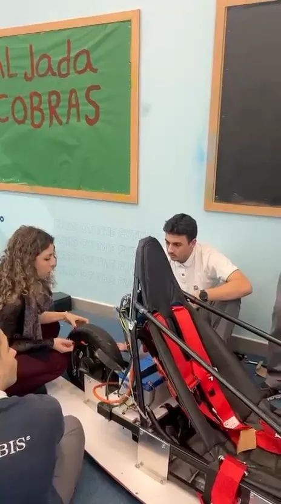
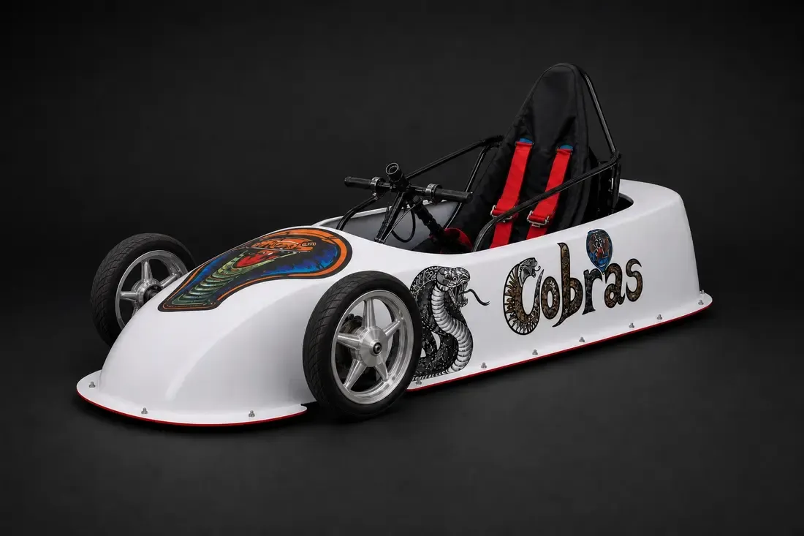
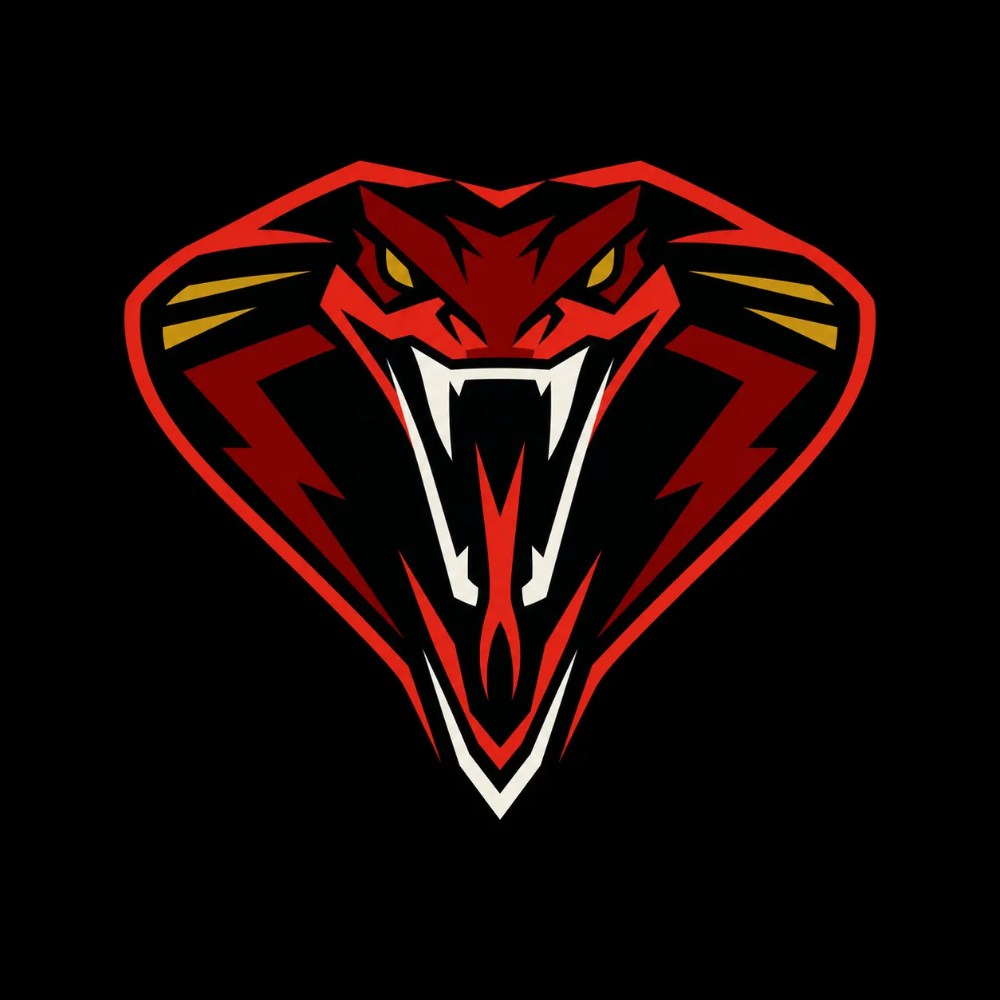

Built to strike.
Engineered to race.
We are a Grades 11–12 student team turning classroom knowledge into a competition-ready electric race car—one design, test, and hard-earned improvement at a time.
01Define the mission
Design + planning
Set performance targets, study EVGP requirements, choose parts, and turn constraints into a buildable layout.

02Make it physical
Build + assembly
Fit the frame, steering, seat, wheels, controls, and mechanical systems into one working machine.

03Bring it to life
Wiring + controls
Connect batteries, controller, motor, kill switch, and driver inputs into an organized 48V system.

04Find the weak points
Testing + troubleshooting
Run the car, observe its behavior, diagnose failures, and record what must change before the next session.

05Prepare to compete
Final adjustments
Refine balance, reliability, safety, and presentation so the car and team are ready for EVGP.

Target race date · February 13, 2027
The countdown to EVGP is on.
197Days
Recalculated at each publish — not a live, second-by-second countdown.
- 01
- 02
- 03
- 04
- 05
Current / Build status
Published workshop snapshot
Current priority: system testing.
This status comes from the latest workshop log, not a live telemetry feed.
Verify controls, electrical connections, and safe shutdown behavior.
Use driving feedback to improve stability, balance, and consistency.
Latest published update: 1 July 2026
01 / The team
More than a school project
One car. Many disciplines. A real starting grid.
The Cobras bring mechanics, electrical systems, safety, design, media, and race strategy into one student-led program. Every member owns part of the result—and every decision has to work on the track.
Discover our mission19Student builders
- 8Mechanic
- 4Media
- 3Driver
- 2Safety
- 2Innovation
02 / What drives us
The Cobra standard
Built around real engineering.
Design with purpose
We translate competition rules, driver needs, and safety constraints into a practical car layout.
Build as one team
Mechanical, electrical, safety, and media crews work together instead of operating in isolation.
Test. Learn. Repeat.
Every run gives us data. We troubleshoot, adjust, and return stronger for the next test.
03 / The machine
Current build dashboard
The Cobra by the numbers.
These figures reflect the current build and will evolve as testing continues.
4 × 12V batteries
Current measured build
Testing benchmark
Depending on load

04 / The build
From sketch to circuitWe build the car—and the skills behind it.
- 01Plan
Define the targets, rules, layout, parts, and safety requirements.
- 02Assemble
Turn the design into a physical chassis, power system, and controls.
- 03Prove
Test performance, diagnose problems, and refine the car for EVGP.
Renders of the car on this page are an AI-assisted visualisation built from the team's own reference photographs, not photographs of the car.See the Cobra in 360°
06 / Workshop log
Dated workshop notes
Latest verified updates.
Electrical
Kill switch and critical-run labels checked
Connectors were secured and the 48V layout was re-labeled for faster troubleshooting.
Mechanical
Battery placement shifted after low-speed runs
The build remains near 186 kg; the next parts change will be followed by another weigh-in.
Media
Sponsor package prepared
The media crew published the sponsor PDF and refreshed outreach materials.

Ready for the grid